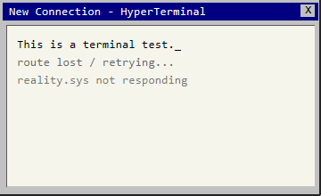
Search
Find codes, notes, pills, route fragments, and strange files.
Surreal 2D psychological platformer
You wake up at work after hours. The monitors still hum, the office keeps rearranging itself, and every locked door points toward one impossible hope: find the last route home before your mind accepts this place as normal.
The pitch
No Service Tonight is a short-form horror platformer where office technology becomes the level design. Players jump through collapsing platforms, unlock color-coded terminals, collect clues, and manage a sanity state that changes movement, screen effects, and the tone of the story.
The game works because it turns familiar stress into playable pressure. A post-it note becomes a code. A broken route display becomes a map puzzle. A harmless work computer becomes a voice telling you that leaving is selfish.

Find codes, notes, pills, route fragments, and strange files.
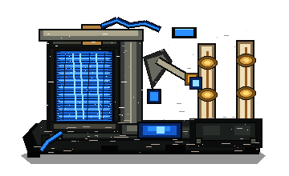
Power relays activate routes and make hidden platforms usable.
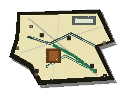
Rebuild the way home by assembling broken pieces of the route.
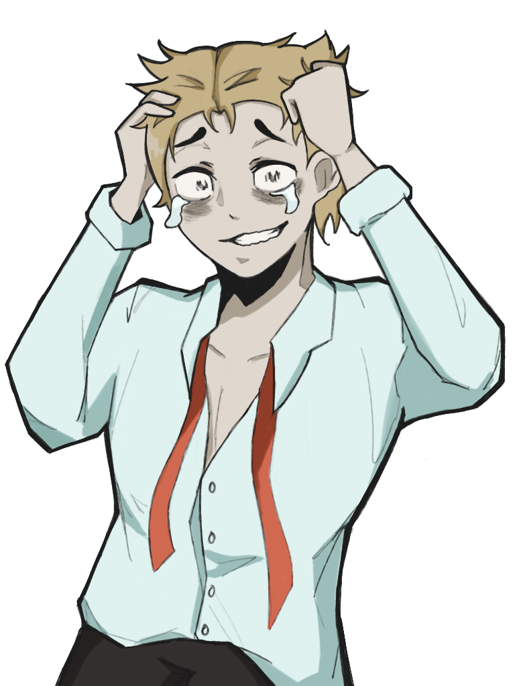
Low sanity slows the player and makes the world feel hostile.
Trailer
The trailer slot is designed for fast cuts between exploration, terminal puzzles, platforming, sanity pressure, and the surreal final route. Add your gameplay trailer as assets/trailer.mp4; until then, the site plays the existing in-game opening video.
What the playable version hints at
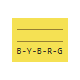
Color clues and found notes turn small observations into keypad codes, relay orders, and route decisions.
Disappearing floors, moving platforms, and chase sequences make each escape route feel unstable.
Sanity is more than a health bar: it changes speed, visuals, sound, and the player's confidence in what they see.
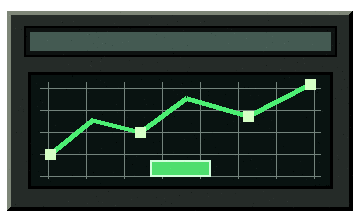
The main objective is not treasure or victory. It is the human-sized goal of getting back to somewhere safe.
Design and illustrations
The website mirrors the game's look: beveled grey windows, dark transit photography, pixel props, terminal blue, warning red, sickly office greens, and a dreamcore sky that feels too bright to trust.
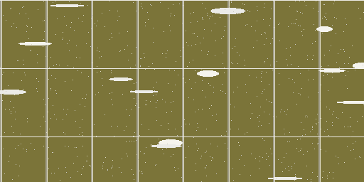
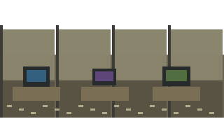
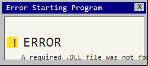
The first levels trap the player in familiar work spaces: cubicles, monitors, power relays, coded computers, and doors that only open when the system decides you have earned it.
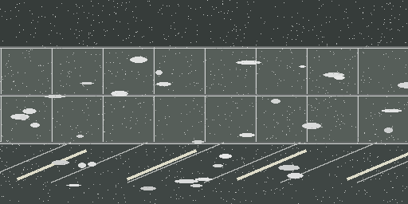
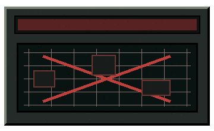
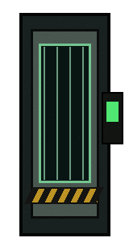
The route puzzle expands the game beyond office rooms. The player hunts for map fragments while the low-sanity heartbeat, slower movement, and harder jumps make escape feel urgent.
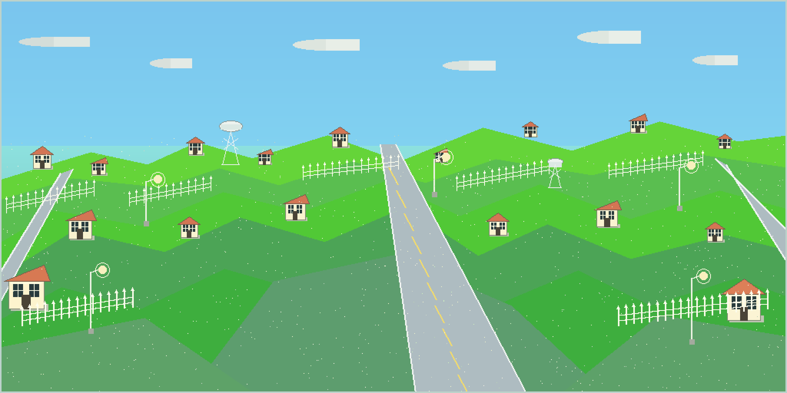
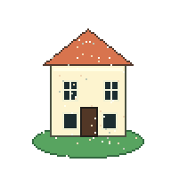
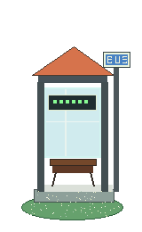
The dreamcore level should look peaceful at first, then become the most direct confrontation with the player's doubts. It is bright, open, and emotionally wrong.
Player state
As the office speaks through monitors and terminals, the player's portrait changes. The full game can push that system further: unstable text, altered platform timing, unreliable route signs, and dialogue choices that become harder to trust.
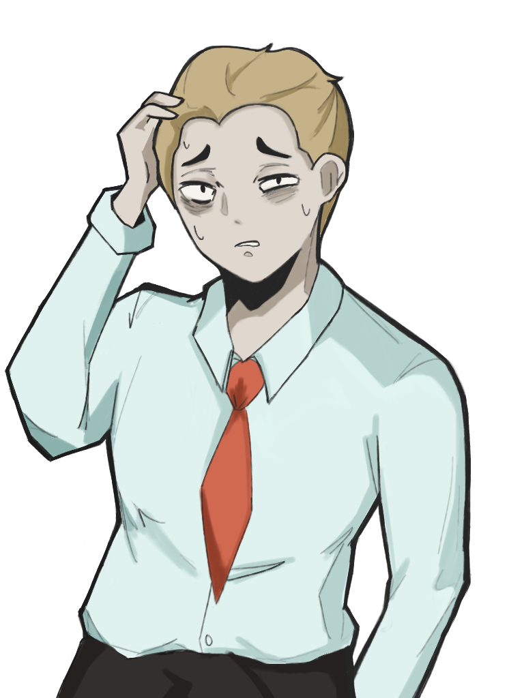
The player can read clues clearly and keep a normal pace, but the office is already starting to feel personally targeted.
Further development
The complete vision is a compact, story-driven platform horror game where every new area asks the same question in a different way: do you keep searching for the route home, or let the place convince you that leaving is impossible?
Add more memories, coworker messages, and environmental clues that explain why the office has such power over the player.
Expand terminals so players can choose which route to power, creating optional risks, shortcuts, and hidden story fragments.
Make sanity affect audio, platform visibility, dialogue pacing, and the reliability of signs without making the game unfair.
Capture the final gameplay trailer, tune checkpoints, improve accessibility options, and build a cleaner ending sequence for the class presentation.
No Service Tonight can become a focused horror story about burnout, anxiety, and the strange courage of wanting to go home. The playable version shows the mechanics; this site shows the full direction.